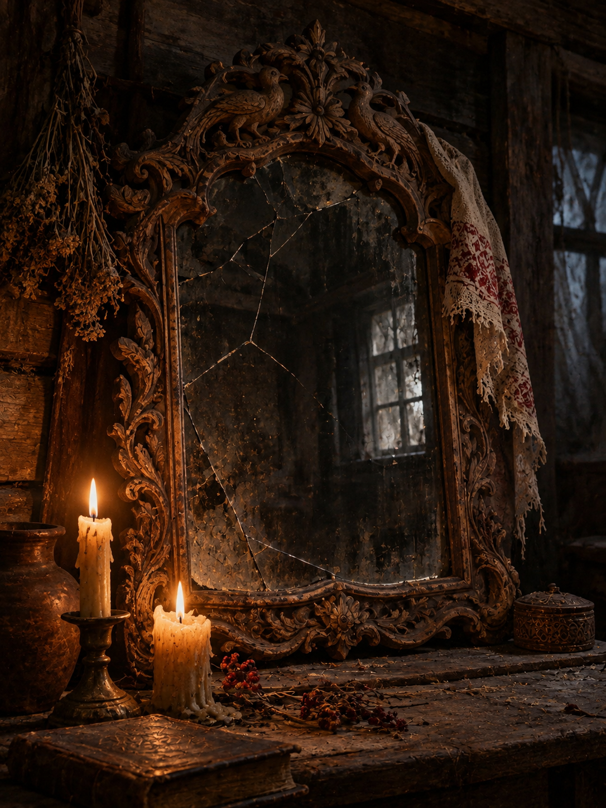
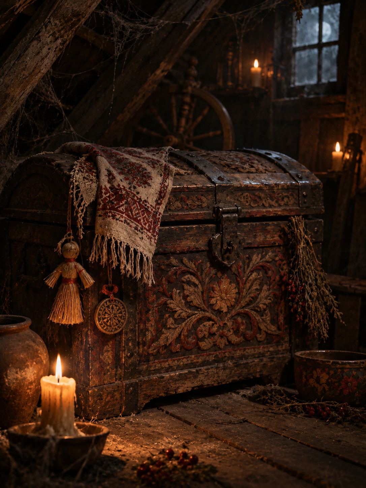

Леший
Дух-хозяин леса, который не имеет постоянного облика и способен менять свою внешность. По поверьям, он сбивал путников с дороги и подражал знакомым голосам.
Там, где деревья помнят забытые имена, реки скрывают древние тайны, а за стенами старых изб слышатся шаги невидимых хозяев.
Войти в древний лесВ народных представлениях славян природа была населена невидимыми существами. У леса был свой хозяин, у воды — свой, а в каждом доме мог обитать дух-хранитель.
О них рассказывали у печи, предупреждали детей и передавали истории из поколения в поколение. Одни духи помогали людям, другие могли напугать или наказать за нарушение старинных обычаев.
Три таинственных существа, которым в народных поверьях принадлежали лес, вода и дом.
Дух-хозяин леса, который не имеет постоянного облика и способен менять свою внешность. По поверьям, он сбивал путников с дороги и подражал знакомым голосам.
Дух-хозяин рек, озёр и болот. Его часто представляли стариком с рыбьими чертами, покрытым тиной и водорослями.
Дух-покровитель жилища, которого представляли небольшим косматым стариком. Считалось, что он охраняет дом, но может тревожить нерадивых хозяев.
«Тропа, которой нет» — история молодого путника Егора, который заблудился в древнем лесу.
Пять глав. Три таинственных духа. Одна дорога, которая может привести домой.
Когда деревня засыпала, люди рассказывали истории, которые не решались повторять днём.
Путник услышал знакомый голос среди деревьев, но дорога привела его в незнакомую чащу.
На берегу старого озера кто-то звал рыбака по имени, хотя вокруг не было ни души.
В пустой избе каждую ночь слышались осторожные шаги, но утром двери оставались закрытыми.
Старые приметы и запреты, которыми объясняли непонятные явления вокруг. Нажмите на поверье, чтобы узнать больше.
Что скрывалось за запретом?
По поверьям, Леший мог подражать человеческим голосам и заманивать путников в чащу.
Откройте старинное поверье
В народных рассказах опасные глубины связывали с Водяным, хозяином рек и озёр.
Почему его уважали?
Считалось, что Домовой любит порядок, заботится о доме и может беспокоить хозяев, если они ссорятся.
Узнайте значение приметы
В поздних народных суевериях разбитое зеркало связывали с возможными несчастьями.
Что говорили старики?
По распространённой примете, свист в доме мог прогнать благополучие и достаток.
Почему его берегли?
Домашний очаг связывали с теплом, защитой семьи и благополучием жилища.
Говорили, что в глубине леса есть место, куда не ведёт ни одна знакомая тропа.
Прикоснитесь к воротам, чтобы услышать забытое предание.
Предметы, обычаи и загадки, сохранившиеся в народной памяти.

Предмет, с которым связывали многочисленные приметы и гадательные обряды.

Узнайте о предметах, которым приписывали защитные свойства.
Разгадайте загадку, чтобы открыть скрытую запись.
Ответьте на пять вопросов о русском фольклоре и получите звание хранителя.
Вас ждут пять вопросов о духах и старинных поверьях.
Мир русского фольклора
Шёпот древнего лесаОткройте семь таинственных мест древнего леса.
Нажмите на светящуюся точку, чтобы узнать тайну места.
Пока ветер шепчет среди древних деревьев, а лунный свет пробивается сквозь ветви, забытые легенды продолжают жить в каждом шелесте листвы.
↑ Вернуться к началу